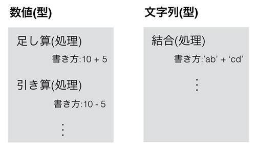

型と変数
本記事の内容
概要
プログラミングには様々なデータが存在します。 たとえば計算をするための「数値」であったり、テキストを扱うための「文字列」などがあります。
Pythonや他のプログラミングでは「データの種類」のことを「型」と呼んでおり、 「型」と「型ができる処理」は密接に関係しています。
たとえば数値であれば足し算引き算といった処理が可能で、 文字列であればアルファベットを大文字にするといった独特な処理ができます。
また、データを使うためには「変数」というプログラミングの仕組みが使われます。 複雑なプログラムを作るには「処理した結果をあとで使う」ということが必要になり、 その結果を保存するために変数が使われます。
型
プログラミングで使われるデータには「型」と呼ばれるものがあります。 たとえば、1や2というのは「数値(整数)」という型であり、 “Hello”というテキストは「文字列」という型です。
プログラミングをする際に、初心者の方はこの「型」について意識することが重要です。 なぜかというと、「型」と「処理」は密接に結びついているためです。
例をあげて説明します。 Python のプロンプトを立ち上げて以下を実行してみてください。
>>> 3 + 3 6 >>> 3 - 1 2
上記のように数値は足し算、引き算することができます。 当たり前といえば当たり前です。
では、文字列はどうでしょうか。
文字列は ' ' でアルファベットや記号を囲むことで作成できますので、 先ほどと同じように足し算と引き算をさせてみます。
>>> 'hello' + ' python' 'hello python'
文字列の足し算はできました。 文字列の後ろに別の文字列をくっつけるという「結合」処理がされています。 文字列の結合は数値の足し算とは違いますが、これも直感的な処理内容といえるのではないでしょうか。
次は文字列の引き算です。
>>> 'hello' - 'python' Traceback (most recent call last): File "<stdin>", line 1, in <module> TypeError: unsupported operand type(s) for -: 'str' and 'str'
文字列の引き算では、エラーが表示しました。
このエラーの内容は「operand(オペランド)」という言葉で小難しく説明されていますが、 要するに「文字列 - 文字列」という処理はできないということを言っています。
最初にも説明しましたが、「型」と「処理」は密接に結びついています。 数値であれば足し算も引き算もできますが、文字列は足し算(結合)しかできません。 同様に文字列でしかできない処理というものも存在しています。
すべてを暗記する必要はありませんが「どの型がどのような処理をすることができるか」 「その処理をするにはどういう書き方をすればいいか」ということをある程度知っておくことは重要です。 これらの詳細はプログラミング言語ごとに若干異なりますが、他の言語でもそれほど大きな違いはありません。 そのため、型と処理の関係の知識がたまると言語というよりプログラミング自体の知識が向上します。
以下に型と処理の関係を示す図を記載します。

なお、ぱっと見て「同じに見えるデータ」であっても、型が違えば別物ですので注意が必要です。 例えば数値の3と、文字列の'3'は別物です。
>>> 3 - 1 2 >>> '3' - '1' Traceback (most recent call last): File "<stdin>", line 1, in <module> TypeError: unsupported operand type(s) for -: 'str' and 'str'
数値の3は引き算に使えますが、文字列の3は使えていません。 繰り返しますが、同じ数字であっても、数値の型(整数型)の3と、文字列型の3は別物です。
変数
変数の目的
現実のプログラムは複雑であるため、1行のプログラムで全ての処理を作ることはできません。 そのため、複数の行で少しずつプログラムを組み立てていくという作業が必要です。
ただ、複数の行のプログラムを連携させるためには、それを実現するための仕組みが必要です。 様々な文法がありますが、「後ろの行で、前の行の処理結果を利用する」ことが、おそらく一番利用頻度が高く、 それを実現するために「変数」を使います。
変数はデータを格納するための箱のようなものです。 前の行でなんらかの処理をして結果を求めて、それを箱である変数に詰めます。
そして、後の行で変数に詰められているデータを取り出して利用します。
このようにすることで、1行で全ての処理を行うのではなく、 複数の行に分けて処理を実行することができるのです。
変数を利用するイメージは、以下の図のようなものとなります。

変数の宣言と代入
変数の使い方は非常に簡単で、以下のように「宣言」するだけで変数に値が格納されます。
変数名 = 変数に入れたい値
変数に値を詰めることを、「代入する」といいます。 Pythonでは変数の宣言と代入は同時に実行されます。
たとえば以下のようなプログラムがあるとしましょう。
a = 'hello' b = 10 + 5
これは変数aを宣言し、それに'hello'という文字列を代入しています。 その次は変数bを宣言し、それに「10 + 5」の計算結果を代入しています。
「変数名」はアルファベットから始まり、 特別なキーワードを避けた英数字と一部の記号(“_”など)から構成されていれば、 好きなものを使ってかまいません。
特別なキーワードは次章以降で扱うPythonの文法で利用されるものです。 たとえば、条件分岐のifやelseなどは変数名には使えません。
変数が持つ値の利用
変数が代入の対象でない場合(つまり「=」記号の左側にいない場合)は、 変数の中に代入されている値が自動的に取り出されて使われます。
以下に例を示します。
>>> a = 5 >>> print(a) 5 >>> b = a + 5 >>> print(b) 10
取り出しただけではデータは消失しないので、何度でも利用できます。 たとえば変数aに5を代入した後に、変数aから2回値を取り出していますが、2回とも5が取り出されています。 一般的には、取り出すというよりも“変数aが5を「返す」”というような言い方をします。
ただ、注意してほしいのは「なにか値が代入されている変数」に新しい値を代入してしまうと、 「昔の値」は上書きされてしまうということです。
>>> b = a + 5 >>> print(b) 10 >>> b = a + 6 >>> print(b) 11
上記例で、bは10を保持していましたが、そこに11が代入されると10を消失してしまいます。
また、当然ですが「代入されていない変数」、つまり「宣言されていない変数」を使おうとするとエラーとなります。
変数に同じ変数の値を加工して代入
変数に同じ変数の値を加工して代入することも可能です。 たとえば、変数aにすでに文字列が入っており、それに別の文字列を追加したいという場合は以下のように書きます。
>>> a = 'hello' >>> a = a + 'python' >>> print(a) hellopython
上記の「a = a + 'python'」は以下の動きをします。
- 右のaが'hello'という文字列を返す
- それに'python'が結合されて'hellopython'になる
- 'hellopython'が左のaに代入される
なお、「a = a」のように加工せずにそのまま代入することもできますが、 その処理にとくに意味はありませんので普通はしません。
変数名のルール
変数に付けられる名前には、いくつかのルールがあります。
先ほど簡単にお伝えしましたが、まずPythonの文法として、以下を満たしている必要があります。 これを満たしていないと、エラーが発生します。
- 予約語でないこと
- アルファベット(大文字、小文字)か、アンダーバーから始まること
- アルファベット、数字、アンダーバーから構成されていること
なお、日本語も一応変数名として使えます。 ただ、プログラミング一般として日本語の変数名は使いませんので、利用は避けることが無難です。
# 日本語の変数名は非推奨 >>> あいうえお = 'hello python' >>> print(あいうえお) hello python
また、先ほどのサンプルでは、変数名に「a」というアルファベットを使いました。 これは文法という意味では間違っていませんが、推奨されない変数名です。
実際のプログラミングを行う際は、先の文法ルール以外にも、 以下のルールを守って変数名をつけることが推奨されています。
- 名詞を使う
- 分かりやすい変数名にする
- 大文字は使わずに、アンダーバーで単語を区切る
- 理由なくアンダーバーから始まる変数名は使わない(特別な意味を持つ)
以下に変数名の良い例と悪い例を示します。
# 1単語の場合
student = 'taro' # OK : 小文字のみで構成
Student = 'taro' # 大文字スタートなのでNG
a = 'taro' # a が何か分からないのでNG
# 2単語の場合
student_name = 'taro' # OK : 小文字の単語間を _ で区切る
studentName = 'taro' # NG : 単語の区切りを大文字に
# するのは Python 流でない
# 先頭が _ から始まる
# 特別な意味があるため、初心者向けではない
_student = 'taro' # 他の人に「これを使わないで下さい」と示す
__student = 'taro' # 文法として外から使えなくする
プログラミング言語によって変数名の名前の付け方は異なります。 難しいことを考えなければ、「Pythonでは小文字の単語とアンダーバーと数字のみ」で構成すると覚えておいて下さい。
名前の上書きに注意
Pythonは関数名などを、値を代入して変数名として使えてしまいます。 たとえば今まで利用してきたprint関数ですと、以下のように上書きされます。
# オリジナルのprint関数 >>> print('hello') hello # print関数を変数名として上書き >>> print = 123 # print関数が使えなくなる >>> print('hello') Traceback (most recent call last): File "<stdin>", line 1, in <module> TypeError: 'int' object is not callable
print関数に「123」という数値を代入すると、それはprintは変数名として使われるようになります。 (これは必ずしも厳密に正しい解説ではありません。 ただ、より正確な動きは難しいため、中級編の関数型までは控えておきます。)
print関数を変数名としてしまうと、本来のprint関数として使えなくなります。 そのため、コンソール出力をしようとするとエラーが発生します。
単純な名前の変数名をつける場合は、それが「既に定義されているものでないか」を、
確認するようにしてください。
Pythonシェルを立ち上げて、使いたい変数名を入力した際に「
name 'XX' is not defined
」と表示されれば、
それは使われていないということです。
ただし、importしていないモジュール名も、同じエラーを返します。 より慎重にやるのであれば、importをして失敗することも確認してください。
>>> test Traceback (most recent call last): File "<stdin>", line 1, in <module> NameError: name 'test' is not defined >>> math Traceback (most recent call last): File "<stdin>", line 1, in <module> NameError: name 'math' is not defined >>> import math >>> math <module 'math' from '/Library/Frameworks/.../math.cpython-36m-darwin.so'>
定義済みの名前を使いたい場合の回避方法
使いたい名前が予約後(Pythonの文法として特別な意味をもつワード)や、 既に定義されている名前と重複している場合があります。 その際は、付けたい名前の後ろにアンダーバーをつけるという慣習があります。
たとえば後ほど説明する「list」という型がありますが、 リストのデータを「listという変数名」に代入することは、先のprint関数の例と同じ理由で避けなければいけません。
そのため、listという変数名の代わりにlist_という変数名を使います。
# NG # list = [1,2,3,4] # OK list_ = [1,2,3,4] print(list_) # [1, 2, 3, 4]
他には、型名の後ろに番号をつけることもあります。
list1 = [1,2,3,4]
ただ、本サイトのような学習目的のサンプルプログラムならともかく、 現実のアプリケーションで用いられるコードの変数は何らかの役割があるはずです。
そのため、list_やlist1といったような名前は本来現れないことが望ましいです。 使うにしても、ごく狭い範囲でのみ使うことが推奨されます。
英語ネイティブでない日本人の私たちにとっては、英語でよい変数名をつけることは難しいかもしれません。 ただ、他の人がどのような変数名を使っているかなどを参考にして、 色々と自分なりのルールを模索してみてください。
定数とマジックナンバー
プログラムの中にはたまに「マジックナンバー」と呼ばれる「正体不明の数字」が現れることがあります。 たとえば以下のコードを見て下さい。
a = 100 * 1.08 print(a)
このコードが何をやっているか分かりません。 結論を言ってしまうと、1.08 は税率にあたり、税抜き100円が税込みいくらになるか確認しています。
1.08という数字を見て勘のいいかたであれば、「税率のようだ」と気づくかもしれませんが、 プログラミングはそのような「気づき」には頼ってほしくありません。 誰が見ても理解できるコードであるべきです。
このような場合、1.08 というよくわからない「マジックナンバー」ではなく「定数」を使うことが望ましいです。
定数は一回設定されたら変更されることがない特殊な変数であり、 その名前は大文字とアンダーバーで宣言されます。
例えば先程の税込み額の計算プログラムを、定数を使って書き直すと以下のようになります。
TAX_RATE = 1.08 a = 100 * TAX_RATE print(a) # 108
上記のTAX_RATEが定数にあたります。 このサンプルのように、定数は一般的にプログラムのファイルの先頭で宣言されます。
定数はプログラムのパラメータとして使われることも多く、 ファイルを開いて定数の値を変更することでプログラムの挙動を変えることがよくあります。
例えば税率が10%に変更されたら、プログラム本体ではなく定数を書き換えることで対応します。
TAX_RATE = 1.10 a = 100 * TAX_RATE print(a) # 110
もし仮に定数を使わずにプログラムを書いていたとしましょう。 つまり、1.08という税率の数字がプログラムの各所に散っているということです。
その場合、税率を8%から10%に変更するには、プログラム中に存在する1.08という値を、 全て1.10に書き換えていく作業が必要になります。 もちろん、税率以外にも1.08という数字が使われている可能性があるので、 プログラムを確認しながらの修正が必要です。 プログラムが巨大であれば、これはかなり面倒な作業になります。
一方、定数を使っていればそのような作業は不要になります。 定数の定義のみを書き直せば、それが定数を使う全部の場所で有効になるからです。
なお、「Pythonの定数」は厳密な意味では定数ではありません。
他のプログラミングを学んだことがある人であれば知っているかと思いますが、 一般的に「定数は上書きできない」という性質があります。
例えばC言語では以下のようなプログラムは実行(コンパイル)できません。
TAX_RATE = 1.08 TAX_RATE = 1.10
定数が更新されていることを、C言語のコンパイラが見つけると、 それをエラーとするためです。
ただ、Pythonの定数は大文字を使った「単なる変数」と変わりがありませんので、 同様のプログラムは問題なく動作します。
TAX_RATE = 1.08 TAX_RATE = 1.10
大文字で定数を作るというのは Python のプログラマたちが決めたルールです。 これには文法的な拘束はありませんので、再代入をしてもエラーとはなりません。
ただ、定数が変わることは誰も想定していないので、 定数への再代入は絶対にしないでください。
コラム: 型と変数
変数の概念はただ、CやJavaなどのほかの言語だともう少し複雑です。 簡単に説明します。 興味がない人は読み飛ばしていただいてかまいません。
Python以外の言語を少しでも学んだことのある人は、先ほどのPythonの変数の使い方に違和感を覚えられたかもしれません。 CやJavaなどは「変数」と「型」が密接に結びついています。 具体的にいうと変数にも型があり、変数の型と代入する値の型は同一である必要があります。
たとえば、Javaで変数xを宣言し、それを利用するには以下のように書きます。
// JAVA int x; x = 5; // OK x = "Java" // Error
Pythonで変数を利用する場合、変数xの前に「int」というキーワードは存在していませんでした。 intは整数型のことなので、この場合は「整数型の変数x」を作っています。 Javaの変数には必ず型があるので、変数を宣言する(作る)際には必ず「int」といった型を示す必要があります。
上記例では変数を作成した後で、その変数に整数値5と文字列“Java”を代入しています。 変数xは整数型なので、同じ整数型である5は代入できるものの、 文字列型の“Java”は代入できずにエラーとなります。
文字列型の変数もこれと同じです。 文字列を格納するために作成された変数yに文字列を代入することは当然できますが、 整数型である5を代入することはできません。
// JAVA String y = "Java"; // OK y = 5; // Error
一方、Pythonの変数にはどのような型でもいれることができるので、 以下のように「整数を代入した変数に文字列を代入する」ことも問題ありません。 そもそもJavaでいう「int」や「String」といった変数の型宣言がPythonのコードにはありませんね。
# PYTHON x = 5 x = 'python'
Python と Java の変数の使い方の違いを図にまとめます。

ただ、上記のような「変数を使いまわす」ようなコードは一般的には避けたほうがよいです。 一度宣言された変数を「別の使い方で再利用」すると、その変数に何が入っているのかわかりにくくなるため、 プログラミングの行儀がよくありません。専門的な言い方をすると「保守しにくいコード」といわれます。 脱線はこのぐらいにして本題に戻ることにしましょう。
 印刷する
印刷する